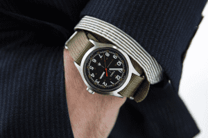
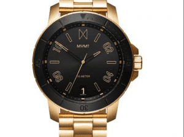
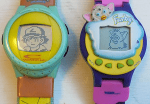
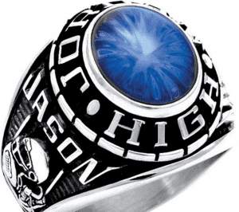
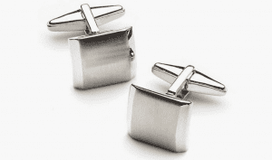
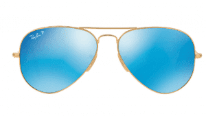
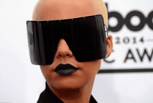
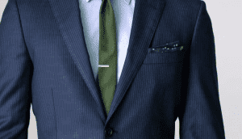
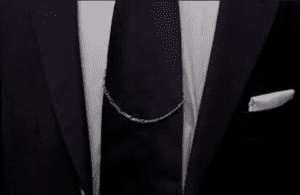

By this point, if you read my articles diligently, you will have some idea of how to dress yourself. You will know that fit and cut are everything, you will know how to be interchangeable with your clothing choices, and you will know how long and proportionate your cuffs and wrists and collars have to be. Or at the very least, you’ll know well enough to let a tailor deal with those.
But if you want to really be a cut above the rest in terms of clothing, you need to pick something that will likely make you a bit apprehensive. That being, accessories!
Top hats?

I am, of course, a bit apprehensive myself, since the whole idea of “peacocking” and “Wearing a great big ‘I’m a retard'” sign has not yet mercifully died— as I will likely detail in a later edition of my “PUAssholes” videos. I do have a bit of a grudge against the Mystery Method and its proprietor.
I told you once before that my fashion advice will never involve peacocking, and I stand by that. The key is symmetry and synergy of all the parts of your outfit, combining to a greater whole. Accessories are just cherries on top, they cannot save a crappy foundation.
Almost as important is the idea that an accessory should be functional first and stylish close second. As you go down the list, you’ll notice that many of these accessories serve a practical purpose.
Hats
A man should wear a hat for a few reasons:
- They’re useful, a good hat protects you from bad weather and enhances your dress.
- It sets you apart (“it’s better to be looked over than overlooked”)
- They make you look taller, for those readers who are shorter.
As usual, the hat should match the clothes being worn and the weather, and in general they should only be worn with a jacket. Don’t be that sperg wearing a fedora with a t-shirt.
Watches
Not so useful nowadays, watches are still a timeless accessory, serving as the masculine equivalent to the bracelet. The most formal watches are simple metal, with leather bands and one set of hands, but a big honking fancy one is good as well. Bear in mind that a “black tie” event means no watch.



The previous two pictures are acceptable formal watches. This one is not.
Rings
Besides your wedding ring, rings can symbolize membership, wealth or extravagance, depending on what type. School and fraternal rings are membership rings, but in general you should only wear one ring on each finger at most, otherwise it looks kind of tacky.
As a side note, ignore that “skull ring brass knuckle crap” that some people propagate. Brass knuckles are kept an inch ABOVE the finger for a reason, punching with a ring is a great way to break your fingers.

Despite the big birth stone, don’t punch with this.
Cufflinks
First of all, I should explain what they are: they’re shirt cuff fasteners that are only needed for French cuff shirts. The key here is, as usual, to be interchangeable: simple colors, metal cufflinks and solid color cuff knots (like monkey fists that go into the French cuff holes)

Sunglasses
They should be clean and compliment the face. You should have two sunglasses: one that are formal, for suits, and a cheaper disposable pair for boating/the beach. Athletic wraparounds are good for sports, but NEVER wear them with a suit or anything above casual attire.

Decent formal sunglasses

No. Avoid the lipstick as well.
Tie Bars, Chains, and Tacks
These are a great example of purposeful accessories: all three keep your tie from flapping in the breeze (bear in mind that the tie is NOT an accessory, it is an integral part of formal wear, and should be treated as such).
These tie accessories add a bit of pizzazz, and remember that interchangeability is always the key, so it is best to wear a simple gold or silver tie bar. They are by nature a bit rigid, so you can wear it at a bit of an angle.

Tie chains are…a chain, but work the same way.

Tie tacks suck, avoid them.
And with that, you have a decent primer on fashionable men’s accessories. Since this is such a big topic, I will add to it in the future.
Read More: How To Choose, Buy, And Shoot A Shotgun